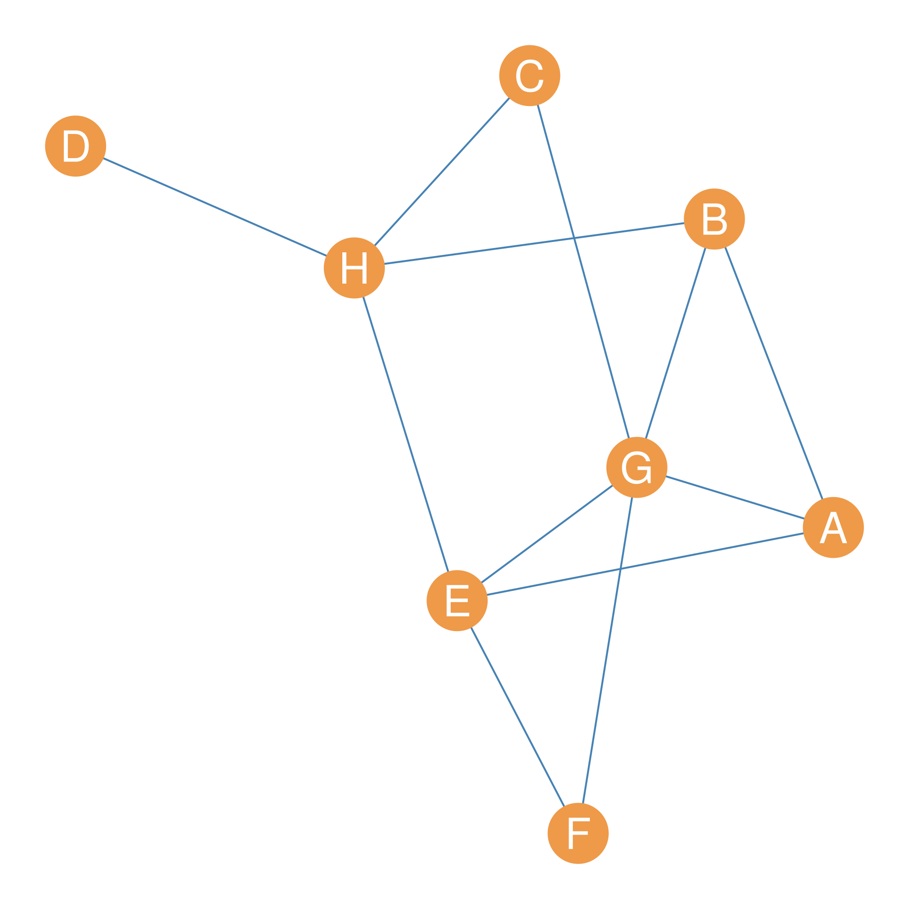
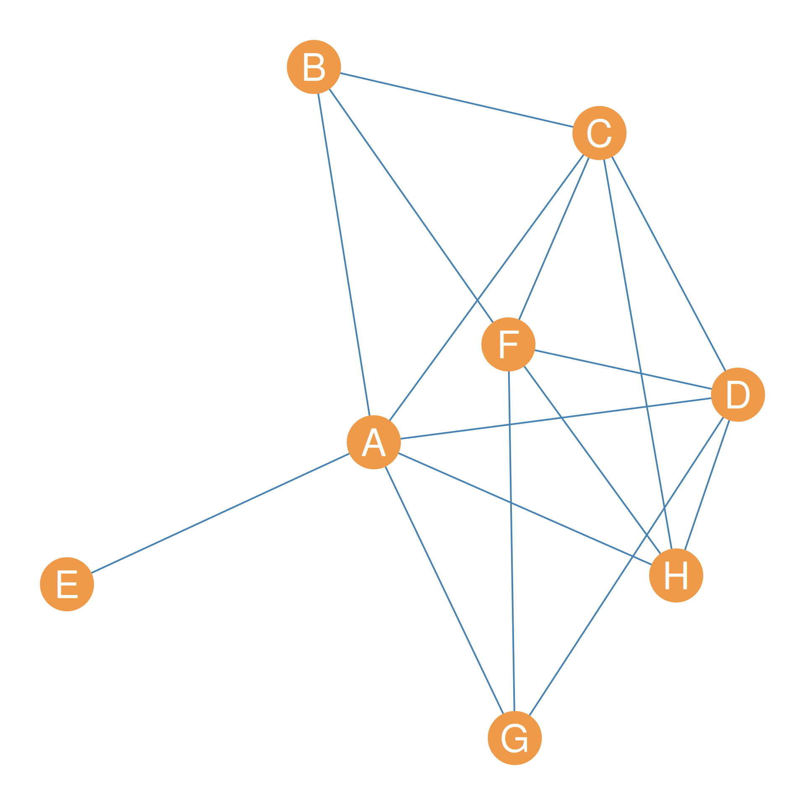
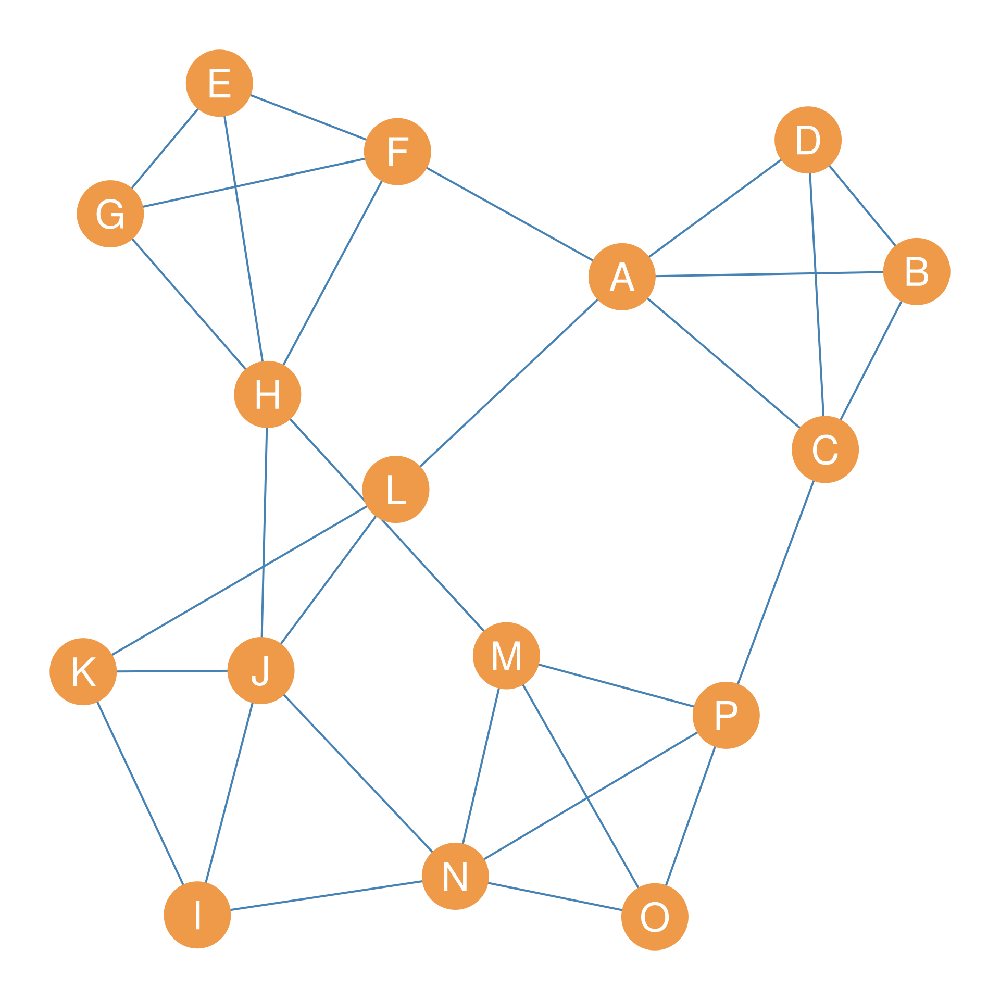
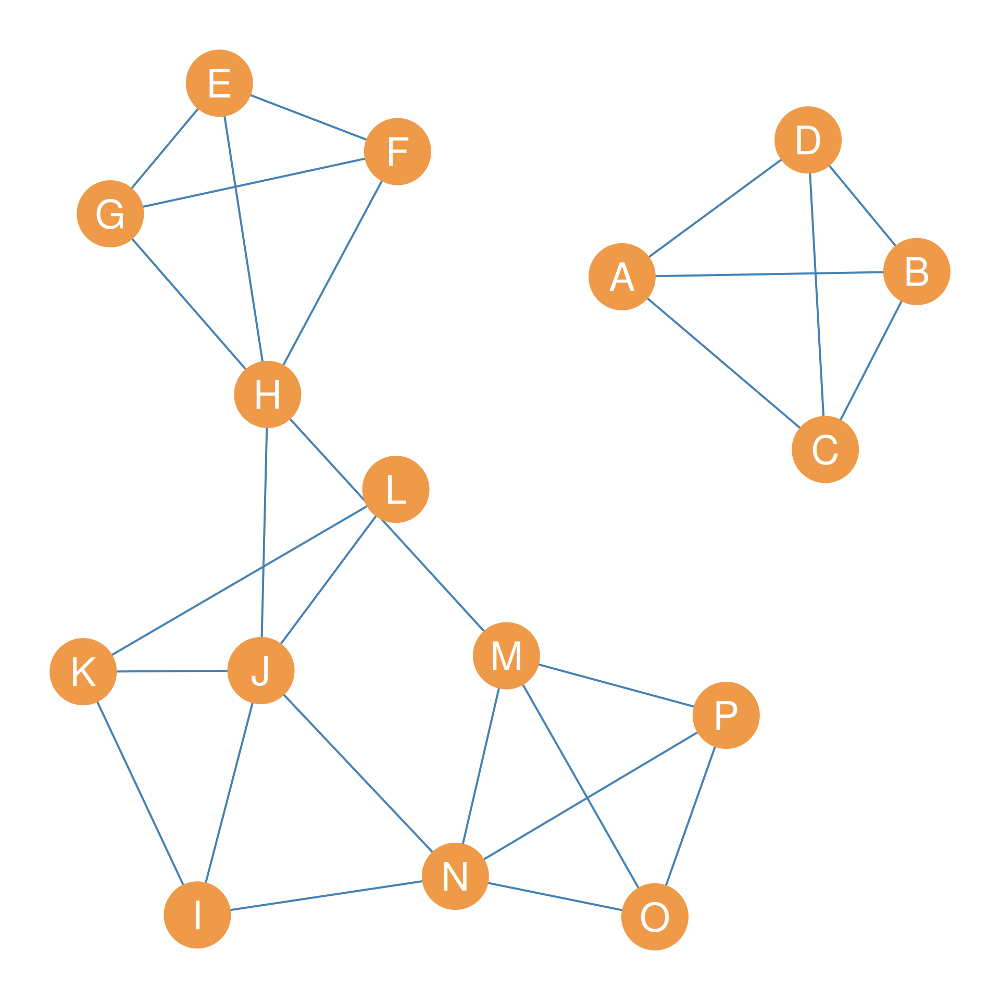
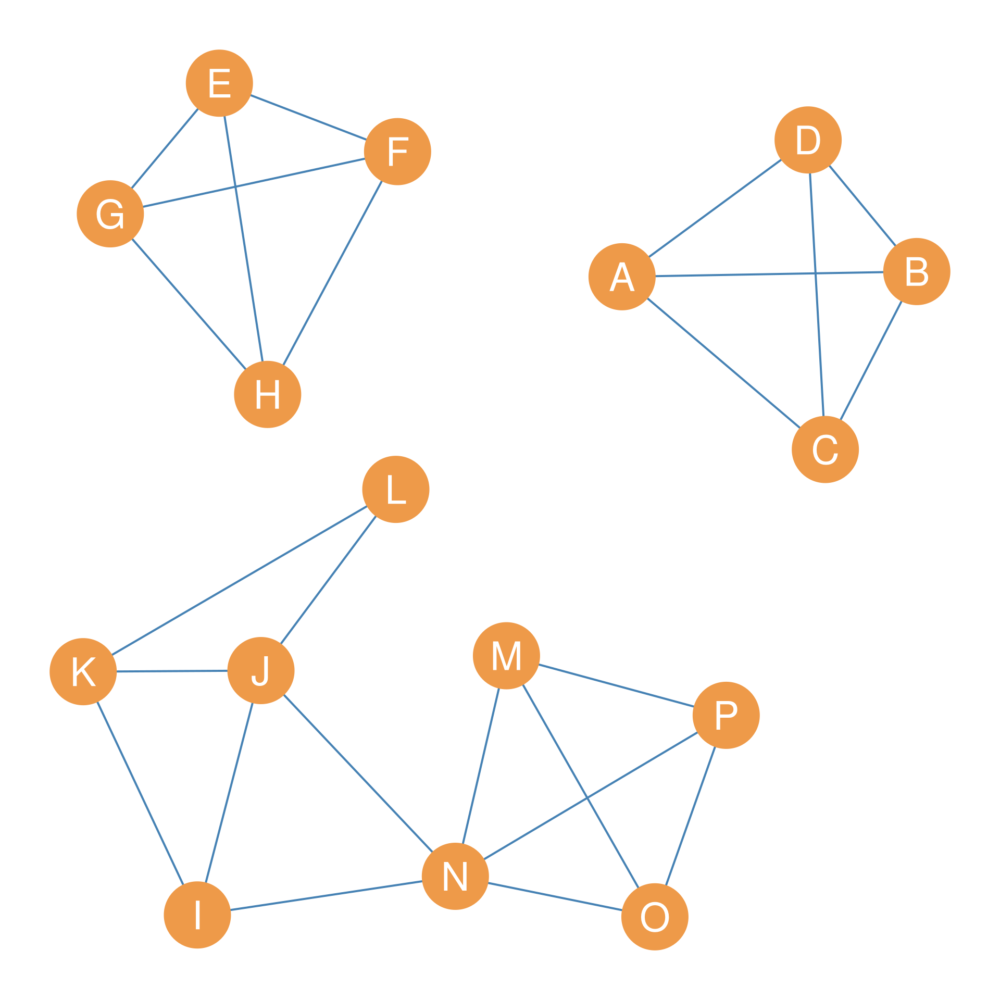
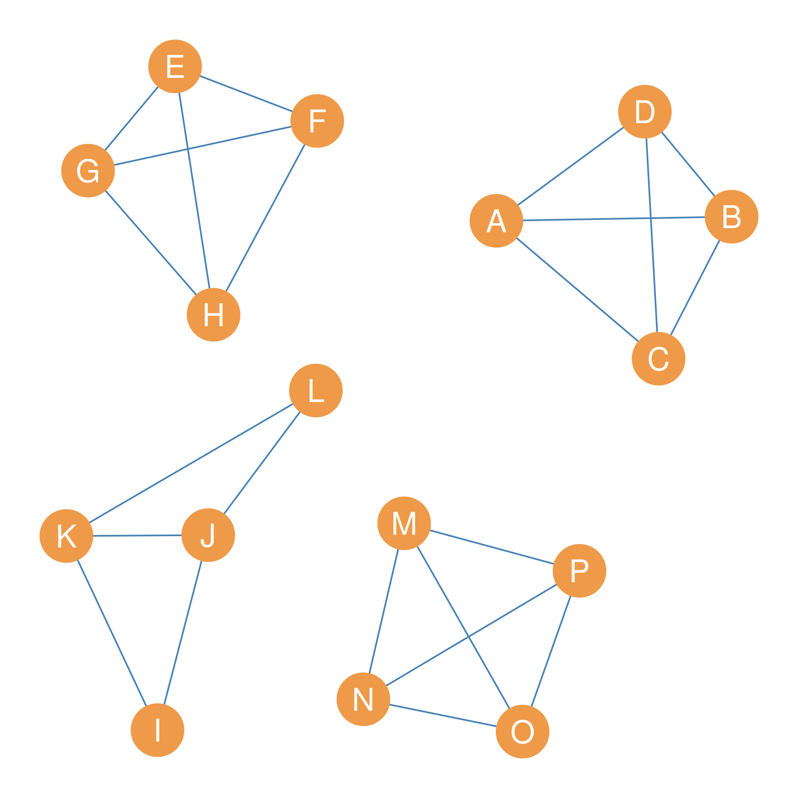
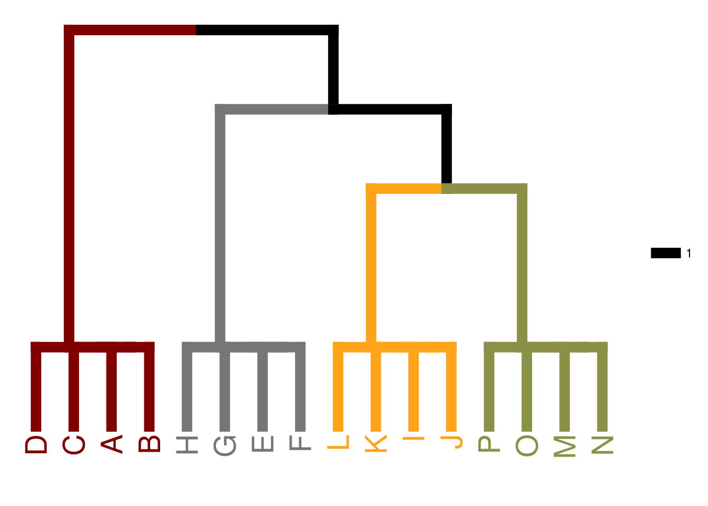
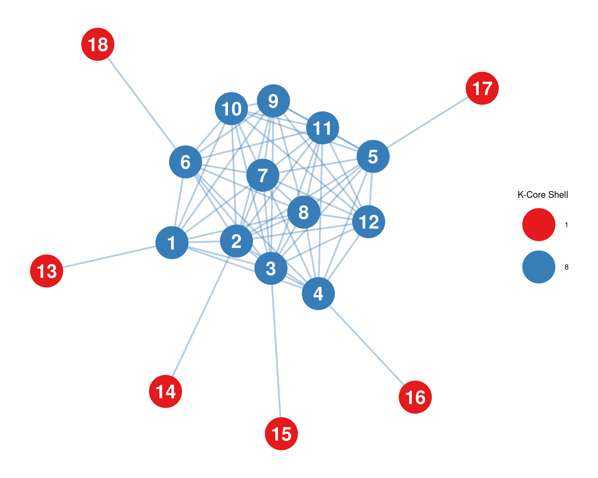

| A | B | C | D | E | F | G | H | |
|---|---|---|---|---|---|---|---|---|
| A | -- | 3 | 2 | 1 | 3 | 2 | 3 | 3 |
| B | 3 | -- | 2 | 1 | 3 | 2 | 3 | 3 |
| C | 2 | 2 | -- | 1 | 2 | 2 | 2 | 2 |
| D | 1 | 1 | 1 | -- | 1 | 1 | 1 | 1 |
| E | 3 | 3 | 2 | 1 | -- | 2 | 4 | 3 |
| F | 2 | 2 | 2 | 1 | 2 | -- | 2 | 2 |
| G | 3 | 3 | 2 | 1 | 4 | 2 | -- | 3 |
| H | 3 | 3 | 2 | 1 | 3 | 2 | 3 | -- |
31 Cohesive Subsets
In Chapter 30, we explored one approach to analyzing the group structure of a network. There we focused on finding densely connected subgraphs in the structure, with the clique providing the ideal type of a maximally complete subgraph, that is a subgroup where every actor is connected to one another.
However, we saw that perhaps the ideal of full connectivity is too strong to define a group, which is why we turned to Luce’s notion of an n-clique which counts groups not based on a direct criterion of connectivity (like adjacency; see Chapter 6) but using an indirect criterion (like reachability; see Chapter 11).
Yet, both of these ideas of groups are based on an intrinsic criterion of what counts as group, and that is the level of connectivity that actors in a group how with each other. However, there is also a positional criterion for what makes a group a group: the idea that group members should have more connections with people inside the group than with those outside the group (Seidman and Foster 1978).
Seidman, Stephen B, and Brian L Foster. 1978. “A Graph-Theoretic Generalization of the Clique Concept.” Journal of Mathematical Sociology 6 (1): 139–54.
In network analysis, groups that meet both the intrinsic and the positional criterion for counting as a group are called cohesive subsets (Borgatti et al. 1990).
In this lesson, we explore ways to define cohesive subsets using graph theory and network-analytic ideas.
First, we need to define some graph-theoretic concepts. Most of these are generalizations to the case of pairs of nodes in the graph of concepts we defined in section Chapter 12, for the graph as a whole.
31.1 Pairwise Edge Connectivity
Recall that the edge connectivity of a graph \(G = \{E, V\}\) is defined as the cardinality of one of the graph’s minimum edge cutsets, where a graph’s edge cutset is any subset of edges taken from the larger set \(E\) that disconnects the graph, an a minimum cutset is an edge cutset of the smallest cardinality possible. So, a graph with edge-connectivity equal to two contains at least one subset of edges of cardinality two that, if removed, would disconnect the graph.
Just like we can define an edge-connectivity number for the whole graph, we define an edge connectivity for each pair of nodes in the graph. The beauty is that the pairwise edge connectivity between two nodes is defined the same way as for the whole graph.
Thus, if A and B are two nodes that belong to the larger set \(V\) of a connected graph \(G\), then their edge connectivity—written \(\lambda(A, B)\)—is given by the minimum number of edges that we would have be removed from \(G\) to disconnect A and B.

Consider the graph shown in Figure 31.1. Let’s say we wanted to determine the edge connectivity of some nodes in the graph. The case of D and H is pretty obvious; their edge connectivity is clearly \(\lambda(D, H) = 1\) since all it takes is to remove the \(DH\) edge to disconnect D and H.
In fact, since D is clearly an end-node in the graph (a node with degree equals one), the node connectivity between D and every other node in the graph is equal to one: In mathese, \(\lambda(D, V-D) = 1\).
This also means that the edge connectivity of the whole graph shown in Figure 31.1, as discussed in Chapter 12, which is always the minimum edge connectivity for any pair of nodes, is also going to be one: \(\lambda(D, V-D) = 1\).
What about the edge connectivity between nodes F and G? Here, we can’t just disconnect these two nodes by removing their direct connection, edge \(FG\). The reason is that F can still reach G via the path \(\{FE, EG\}\). So we also need to remove the \(FE\) edge to disconnect F and E, meaning that \(\lambda(F, E) = 2\).
31.1.1 The Edge Connectivity Matrix
We can, of course, keep going and figure out the pairwise edge connectivities for each pair of nodes in the graph. We can store this information in a handy dandy matrix, which we will call the graph’s edge connectivity matrix.
The edge connectivity matrix for the graph shown in Figure 31.1 is shown in Table 31.1.
Note that the edge connectivity matrix is symmetric, which makes sense since for any node A and B \(\lambda(A, B) = \lambda(B, A)\). The diagonals are empty since edge-connectivity is a pairwise relation between different nodes in the graph.
The edge connectivity between two nodes can be interpreted as the strength of the indirect ties between any two nodes in the graph. The higher, the stronger the indirect links between two nodes.
It is clear, from looking at Table 31.1, that the strongest connected nodes in Figure 31.1 are nodes E and G with \(\lambda(E,G) = 4\), which means that we would have to delete four distinct relationships in the network to disconnect them.
31.1.2 Edge-Independent Paths
A mathematical theorem in graph theory says that if the edge connectivity between two nodes is a certain number n, then that means that there are a maximum of n edge independent paths connecting the two nodes in the graph (White and Harary 2001, 333). Two paths are edge-independent if they don’t share any edges.
This means, for instance, that nodes E and G in Figure 31.1 are connected by four distinct paths that don’t share any edges between them. These are: \(\{EG\}\) (their direct link) and \(\{EF, FG\}\), \(\{EH, HB, BG\}\), and \(\{EA, AG\}\). You can see that all the edges in these four paths are different. The same applies to every pair of nodes in the graph.
31.2 Pairwise Node Connectivity
Pairwise node connectivity works the same way as edge connectivity, with some wrinkles. The pairwise connectivity between two non-adjacent nodes A and B in a graph \(G\)—written \(\kappa(A, B)\)—is the minimum number of nodes that would have to be removed from the graph to eliminate all paths connecting A and B (thus disconnecting them).
Note that, in contrast to edge connectivity, node connectivity is only defined for non-adjacent nodes. The reason is that for pairs of nodes directly connected by an edge, there’s no set of other nodes we could remove from the graph to disconnect them! We could remove all the other nodes, leaving only a single connected dyad at the end (White and Harary 2001).
White, Douglas R, and Frank Harary. 2001. “The Cohesiveness of Blocks in Social Networks: Node Connectivity and Conditional Density.” Sociological Methodology 31 (1): 305–59.

Consider the graph shown in Figure 31.2. Let’s say we wanted to figure out the node connectivity between nodes E and G. Well, that’s easy because we know that removing node A will disconnect them.
In fact, the node connectivity of node E and the rest of the nodes in the graph except for A, written \(\kappa(E, V-(A, E)) = 1\), is one, since removing A separates E from every other node in the graph other than A. Recall that since E and A are adjacent, their node connectivity is not defined.
How about the node connectivity of B and H? This one is a bit harder, because we can’t just remove one node to disconnect them. Getting rid of A will not do, because B can still reach H via path \(\{BF, FH\}\). But getting rid of F will not do either because B can still reach H via path \(\{BC, CH\}\). So we would have to remove all three nodes \(\{A, F, C\}\) to disconnect B and H, meaning their pairwise node connectivity is \(\kappa(B, H) = 3\).
31.3 The Node Connectivity Matrix
As with pairwise edge connectivity, we can continue by calculating node connectivity for each pair of non-adjacent nodes in the graph. We can collect these results in a matrix, where each cell records the node connectivity of the row node with respect to the column node. The result would look like Table 31.2.
| A | B | C | D | E | F | G | H | |
|---|---|---|---|---|---|---|---|---|
| A | -- | -- | -- | -- | -- | 5 | -- | -- |
| B | -- | -- | -- | 3 | 1 | -- | 3 | 3 |
| C | -- | -- | -- | -- | 1 | -- | 3 | -- |
| D | -- | 3 | -- | -- | 1 | -- | -- | -- |
| E | -- | 1 | 1 | 1 | -- | 1 | 1 | 1 |
| F | 5 | -- | -- | -- | 1 | -- | -- | -- |
| G | -- | 3 | 3 | -- | 1 | -- | -- | 3 |
| H | -- | 3 | -- | -- | 1 | -- | 3 | -- |
As Table 31.2 shows, the node connectivity of E with every other node in the graph, except for A, is 1, which is what we suspected. Note that since one is the minimum node connectivity observed among any pair of nodes in the graph, this is also the node connectivity of the whole graph: \(\kappa(G) = 1\), as discussed in Chapter 12.
In contrast, the strongest connected nodes in terms of node-connectivity are the pair (A, F), which have node connectivity \(\kappa(A, F) = 5\), the maximum in the graph. This means we would have to remove five nodes to disconnect them: the set \(\{B, C, D, H, G\}\).
This also means following a theorem proved by the mathematician Karl Menger in 1927, and aptly named Menger’s Theorem, that there are five node-independent paths linking nodes A and H in Figure 31.2. Two paths are node-independent if they don’t share any inner nodes.
More generally, Menger’s Theorem says that for any pair of node-adjacent nodes in a connected graph, if we know their node connectivity is some number n, then we also know that there are n node-independent paths connecting them.
In the case of A and F in Figure 31.2, the five node-independent paths linking them are as follows:
- \(\{AB, BF\}\)
- \(\{AC, CF\}\)
- \(\{AD, DF\}\)
- \(\{AH, HF\}\)
- \(\{AG, GF\}\)
You can verify that each of these paths has distinct inner nodes not shared by any of the other four paths!
31.4 Using Edge Connectivity to Find Cohesive Subsets
You may be wondering why we have bothered to define all these graph-theoretic concepts, neat as they are. The reason is that we can use the ideas from Section 31.1 and Section 31.2 to develop techniques for finding cohesive subsets in networks. That is, discover a set of actors who have stronger connections among themselves than they do with the rest of the actors in the system, the topic we began this lesson with. In this section, we show how to use the ideas developed in this lesson, along with those in Chapter 12, to do so for edge connectivity.




Consider Figure 31.3 (a). Let’s say we wanted to identify the most cohesive subgroups in the graph based on edge connectivity. How would we proceed?
The first thing we would do is ask: What is the edge-connectivity of the whole graph in Figure 31.3 (a)? We know the answer to this question from Chapter 12: the edge connectivity of the graph is the minimum number of edges required to disconnect it.
In the case of the graph shown in Figure 31.3 (a), the answer is \(\lambda(G) = 3\). We can disconnect the graph by removing the minimum edge cutset \(\{AF, AL, CP\}\), whose cardinality (number of members) is indeed three.
So the second thing we do is delete the edges in the minimum edge cutset from the graph. This results in Figure 31.3 (b), which is a graph with two connected components.
What do we do now? Third, we compute the edge-connectivity of each connected component of the new disconnected graph and disconnect the component with the smallest edge-connectivity.
What is this business about the edge connectivity of each component? Well, just like connected graphs have an overall graph edge connectivity (see Section 12.3), the separate components of a disconnected graph also have an edge connectivity. More generally, in a disconnected graph with components \(\{C_1, C_2, \ldots C_k\}\), a k-edge-connected component is a component with edge-connectivity k.
For instance, in the graph shown in Figure 31.3 (b), the largest giant component is clearly a 2-edge-connected component; \(k=2\) because removing only two edges (the \(HJ\) and \(HM\) edges) disconnects it.
The smaller component, however, is a clique of size four featuring nodes \(\{A, B, C, D\}\), which means that it would remove three edges to disconnect any one of the actors from the others, so it is a three-connected component.
In general, if a subgraph of a larger graph is maximally connected (it is a clique), then the edge connectivity of that subgraph is always \(n-1\), where n is the number of nodes in the clique.
So it is clear that our next step is to disconnect the giant component by removing the relevant two edges. This is shown in Figure 31.3 (c).
Now we have a graph with three components, two of them are cliques of size four with edge-connectivity \(4-1 = 3\). So we compute the k-edge connectivity of the remaining larger component, which is \(\lambda(C_3) = 2\), since removing the edges \(JN\) and \(IN\) would disconnect the component. So we go ahead and delete this minimum edge cutset, resulting in the graph shown in Figure 31.3 (d).
We can stop now because disconnecting any of the remaining four components would result in an isolate node. So that means that we have identified the cohesive subgroups in the graph!
Note that at each step, the cohesive subgroups are nested inside one another. So they can be arranged into something called a dendrogram that shows this nesting, as in Figure 31.4.

Borgatti et al. (1990) refer to the nested cohesive subgroups identified using this approach as lambda sets, after the Greek letter lambda (\(\lambda\)), which is used to indicate the edge connectivity of a graph, a component, or a pair of vertices, as we have seen in this lesson and Chapter 12.
Borgatti, Stephen P, Martin G Everett, and Paul R Shirey. 1990. “LS Sets, Lambda Sets and Other Cohesive Subsets.” Social Networks 12 (4): 337–57.
Technically, each component in the graphs shown in Figure 31.3 (a), Figure 31.3 (b), and Figure 31.3 (c) is a lambda-set under the definition given by Borgatti et al. (1990).
Lambda sets are, of course, subgraphs of the original graph, but they have interesting properties. First, at any stage of the graph partition process, each node belongs to only one lambda set. Smaller lambda sets, such as \(\{M, N, O, P\}\), are nested within larger ones, such as \(\{I, J, K, L, M, N, O, P\}\).
Second, the pairwise edge connectivity between nodes in the same lambda set is always larger than the pairwise edge connectivity between any other node in the lambda set (including themselves) and a node not in the lambda set. That means that nodes inside a lambda set have stronger indirect connections with one another than they do with outsiders, which is precisely what we would want in a cohesive subset of actors.
31.5 K-Core Decomposition and Core-Periphery Structures
So far, we have focused on finding cohesive subgroups that form distinct, often symmetric, and relatively separate clusters of actors (like cliques, \(n\)-cliques, or lambda sets). However, many social, economic, and organizational networks are organized differently: rather than forming neat, parallel clusters, they feature a highly cohesive, densely interconnected Core subgroup surrounded by a sparsely connected Periphery whose members link to the core but rarely to each other.
In network analysis, this is called a core-periphery structure. Some classic real-world examples include: - Scientific Collaboration: A core of elite, heavily co-authoring scientists who drive the field, surrounded by a peripheral set of occasional authors who co-author with the core but never with each other. - The Global Economy: Wealthy core nations exchanging high-value manufactured goods and capital, surrounded by peripheral nations that export raw materials to the core but maintain very few trading relationships with one another. - Office Advice Networks: A core group of experienced managers who consult each other on decisions, surrounded by peripheral employees who seek advice from the core but rarely consult one another.
31.5.1 Finding Cores: The \(k\)-Core Decomposition Algorithm
To identify these hidden cores in a messy, complex network, the sociologist Stephen Seidman (1983) introduced the concept of the \(k\)-core. A \(k\)-core is defined as a maximal subgraph in which every vertex is connected to at least \(k\) other vertices within that subgraph.
Seidman, Stephen B. 1983. “Network Structure and Minimum Degree.” Social Networks 5 (3): 269–87.
To find the \(k\)-cores of a network, we use a recursive pruning algorithm known as \(k\)-core decomposition (often called the “onion-peeling” algorithm). The algorithm works as follows: 1. We start by calculating the degree of all nodes in the network. 2. We choose a threshold \(k = 1\) and recursively prune (remove) all nodes with a degree strictly less than \(k\), along with all of their incident edges. 3. Because removing these nodes reduces the degree of their remaining neighbors, some of those remaining nodes might now fall below the threshold. We recursively repeat the pruning process until no more nodes can be removed. The remaining subgraph constitutes the \(k\)-core for that value of \(k\). 4. We then increment the threshold to \(k = 2, 3, \dots\) and repeat the recursive pruning.
This process peels the network layer-by-layer like an onion. The nodes removed at each step are assigned to different \(k\)-shells, and the nodes that survive the deepest levels of pruning represent the highly connected, resilient core of the social system.
We can easily perform \(k\)-core decomposition in R using the tidygraph package, which provides a convenient wrapper around igraph’s coreness calculations via the node_coreness() function. Let’s look at an example. In Figure 31.5, we generate an 18-node network featuring a clear core-periphery structure and color the nodes by their calculated \(k\)-shell membership.

As we can see in Figure 31.5, the outer, peripheral nodes (nodes 13 to 18) are immediately pruned during the first step because they only have a single tie to the core (degree = 1). They belong to the \(k=1\) shell. As we increment \(k\), the pruning algorithm continues to shave off layers until only the highly integrated, dense inner core of nodes remains at the highest coreness level (\(k=4\)).
Unlike traditional partition methods that divide networks into separate, disjoint subgroups, \(k\)-core decomposition provides a nested, multi-layered view of social integration, elegantly mapping the gradient from the marginal periphery to the dominant core.